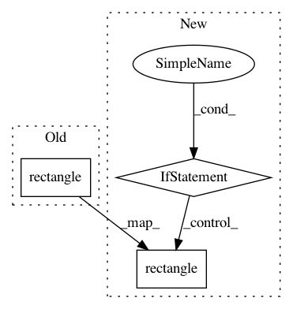

e9ea863b293c703aa7612bb9163eff10e9d6ae9a,plugins/extract/detect/dlib_cnn.py,Detect,process_output,#Detect#Any#Any#Any#Any#,133
Before Change
for face in faces:
face = self.convert_to_dlib_rectangle(face)
face = dlib.rectangle( // pylint: disable=c-extension-no-member
int(face.left() / self.scale),
int(face.top() / self.scale),
int(face.right() / self.scale),
int(face.bottom() / self.scale))
detected_faces.append(face)
if indexes:
target = indexes[idx]
output[target] = detected_faces
After Change
scale = scales[idx]
if isinstance(rotation_matrix, np.ndarray):
faces = [self.rotate_rect(face.rect, rotation_matrix)
for face in faces]
for face in faces:
face = self.convert_to_dlib_rectangle(face)
face = dlib.rectangle( // pylint: disable=c-extension-no-member
int(face.left() / scale),
int(face.top() / scale),
int(face.right() / scale),
int(face.bottom() / scale))
In pattern: SUPERPATTERN
Frequency: 3
Non-data size: 3
Instances
Project Name: deepfakes/faceswap
Commit Name: e9ea863b293c703aa7612bb9163eff10e9d6ae9a
Time: 2019-01-06
Author: julien.seitz@gmail.com
File Name: plugins/extract/detect/dlib_cnn.py
Class Name: Detect
Method Name: process_output
Project Name: Qidian213/deep_sort_yolov3
Commit Name: 6d46047109204e388fd54f2d8e20fc07576ce3b7
Time: 2018-05-15
Author: xhx1247786632@gmail.com
File Name: demo.py
Class Name:
Method Name: main
Project Name: Qidian213/deep_sort_yolov3
Commit Name: 6c62f75eaf1c6beffad3db2850d2469fd0c2e8e2
Time: 2018-05-15
Author: xhx1247786632@gmail.com
File Name: demo.py
Class Name:
Method Name: main